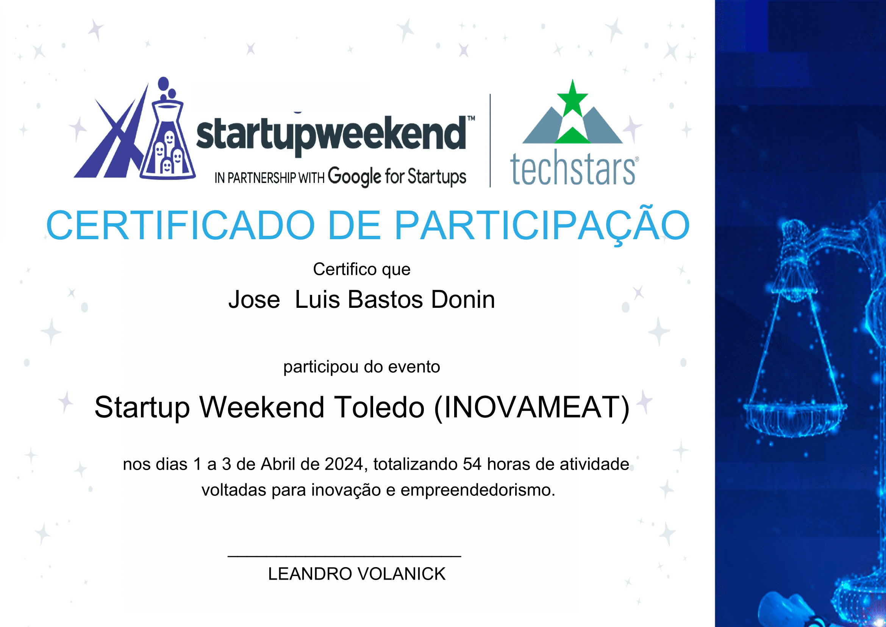

Donin
Menu
About
Projects
Certificates
SICITE - Gerador de Chaves Presentes em Instruções de Máquina por Teoria de Satisfabilidade do Módulo
PDF

Startup weekend toledo
Certificate
IX Encontro de Iniciação Científica do Campus Toledo
Certificate